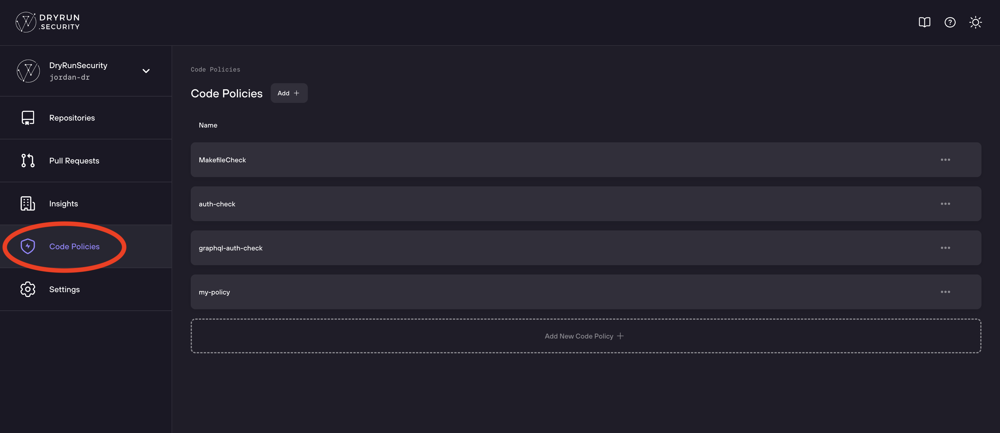
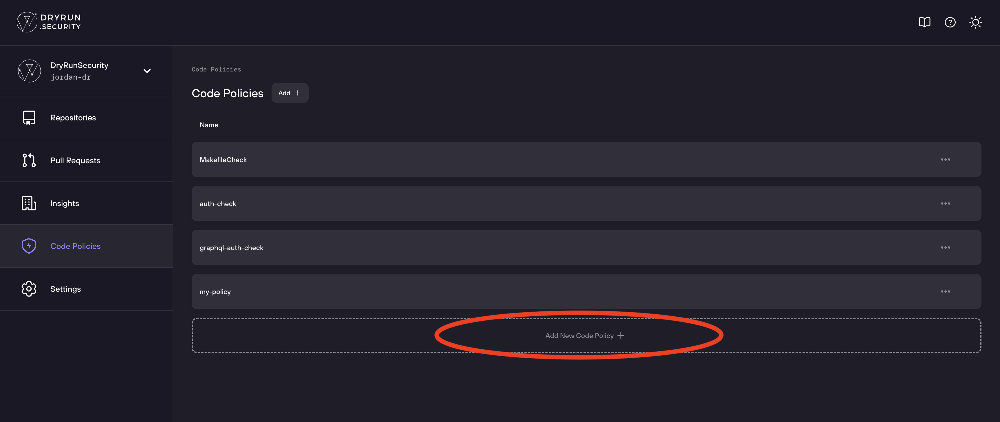
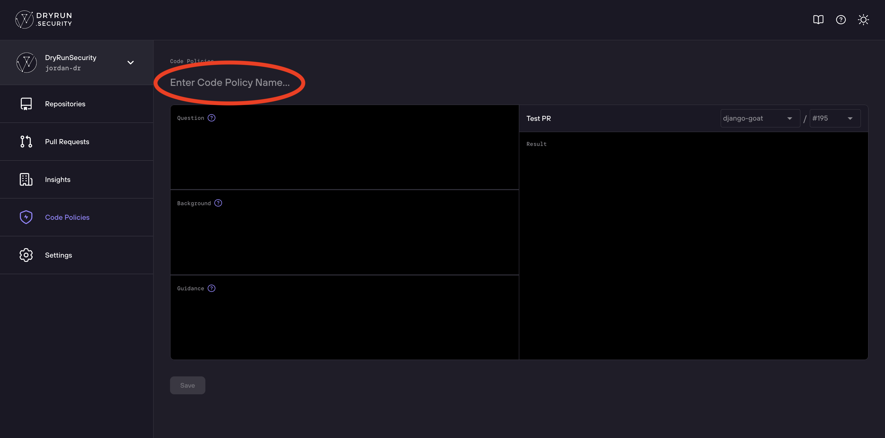
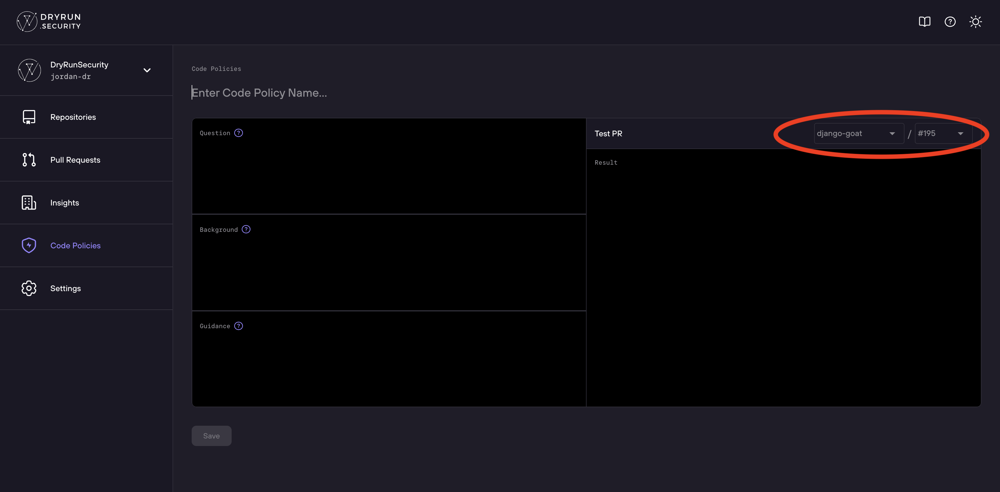
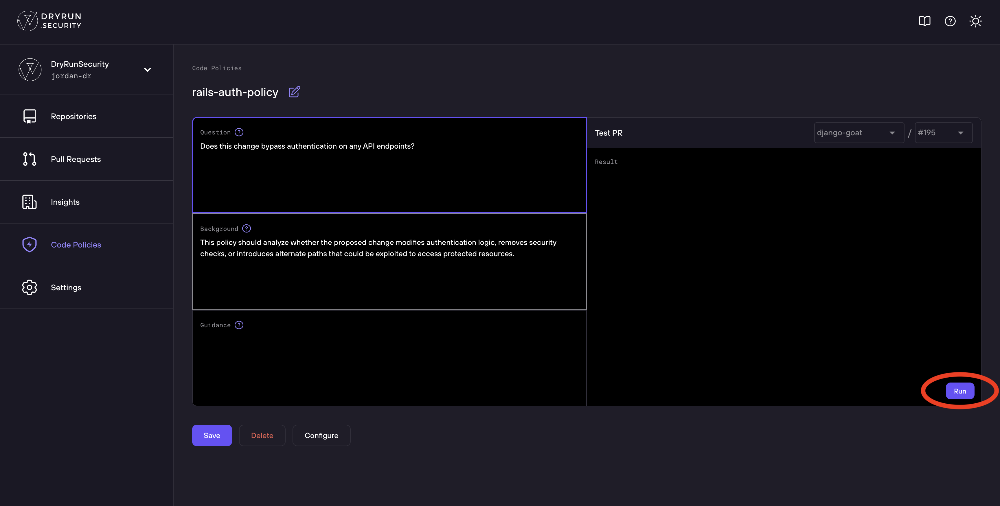
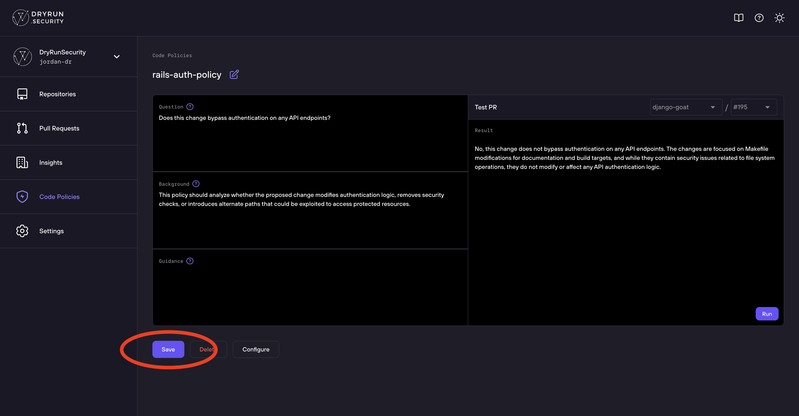

Custom Code Policies
Create custom security rules in plain English using Natural Language Code Policies.
Natural Language Code Policies
DryRun Security's Natural Language Code Policies (NLCPs) are a way to define and enforce security policies in a codebase using natural language instead of complex scripting or specialized rule languages.
In this section we demonstrate how to build and save a Natural Language Code Policy in the DryRun Security Dashboard.
Creating a Policy - Visual Walkthrough
Navigate to the Code Policies section of the DryRun Security dashboard.

Click Add New Policy to start creating a new NLCP.

Enter a descriptive name for your policy and fill in the Question, Background, and Guidance fields.

Select the repository to test the policy against.

Click Run to evaluate the policy against a sample PR and review the results.

Once satisfied with the results, click Save to add the policy to your organization.

Creating a Policy
- Log in to the DryRun Security portal at https://app.dryrun.security.
- Navigate to the Code Policies section. You'll see a list of previously saved Code Policies.
- Click Add New Code Policy. You'll see the Code Policy Builder, which can be used to evaluate and save a Natural Language Code Policy.
- Enter a Name for the policy.
- Choose a Repository and Pull Request to evaluate.
- Enter the Natural Language Code Policy details:
- Question (required): A natural language question that identifies whether a specific change relates to the policy. For example, "Does this change expose any sensitive data?"
- Background (optional): Background information or examples that may be used to refine the evaluation. For example, "We are concerned about..."
- Guidance (optional): Additional information on actions to take when the policy condition is met.
- Click Run to see the results of the Code Policy evaluation.
- Once the policy is returning expected results, click Save to save it for use in a Repository configuration.
To apply the Code Policy to one or more repositories, click Configure and follow the steps in Configure Repositories.
Policy Enforcement Agent
When a pull request is opened, DryRun Security's Policy Enforcement Agent runs all configured Natural Language Code Policies for the repository. The Policy Enforcement Agent can run up to 7 code policies per repository. Results appear in the PR comment and in the GitHub Checks area, with the option to block merges when a policy has findings.
Next Steps
- See the NLCP Starter Pack for ready-to-use policy examples.
- See NLCP Best Practices for guidance on writing effective policy backgrounds.
- See Configurations to attach policies to repositories.
Starter Pack
The following Natural Language Code Policies can be used to help you get started. They are generic enough to be customized by your organization but can also be used as-is.
Starter Policies
| Name | Question | Background |
|---|---|---|
| GitHub Action Policy | Carefully examine any GitHub Actions related changes or inline commands for security risks. Provide results in the form of a list with line numbers and with the title: Identified GitHub Actions Risks. | Concerned about: use of untrusted or mutable third-party actions; secrets exposure; unsafe use of run: commands; privilege escalation; insecure usage of pull_request_target trigger; workflow that can be triggered by forks with write access to secrets. |
| New API Endpoint w/o authz | Does this code introduce a new API endpoint without authorization enforcement? | Concerned about new API routes or endpoints being added without any type of enforcement. Check default framework annotations or a specified access definitions file to determine if the endpoint has been added without authz. |
| Third Party Scripts | Does any file in the codebase include references (e.g., via <script> tags, import/require statements, or dynamic loading functions) to third-party scripts? |
Introducing third-party scripts means trusting an external source to provide code that will run in user browsers. If a CDN or third-party host is compromised, users could be exposed to malicious behavior (e.g., credential theft, data exfiltration, crypto mining). |
| Logging Sensitive Data | Does any logging function in the codebase output sensitive data (such as passwords, API keys, or session tokens)? | Logging sensitive data can inadvertently expose secrets if logs are accessed by unauthorized parties. |
| Username Enumeration | Does this change introduce username enumeration flaws? | Username enumeration flaws typically happen when system error messages indicate the presence of a user in a system and can be used by malicious actors to find valid usernames. |
| Token Validation Check | Are there any logical flaws in our token validation or generation logic? | Tokens need to be generated using a secure algorithm that has high entropy, and they must be validated before use. |
| Insecure File Upload Handling | Does this change introduce or modify file upload functionality in a way that might allow dangerous file types or bypass security controls? | File uploads, if not strictly validated, pose a risk of allowing attackers to send files that could be executed server-side (e.g., web shells) or cause other harm. |
| Improper Error Handling | Does this change expose detailed internal error messages or stack traces to end users that might reveal sensitive application internals? | Detailed error messages or stack traces can provide attackers with insights into the application structure, technology stack, or logic. |
| Insufficient CORS Configuration | Does this change modify Cross-Origin Resource Sharing (CORS) settings in a way that might allow unauthorized cross-origin access? | Overly permissive CORS settings can open the door to cross-origin attacks or unintended data leakage. |
| Insecure Inter-Service Communication | Does this change affect how microservices communicate, potentially bypassing secure channels, authentication, or authorization between services? | In a microservices architecture, inter-service communication often transmits sensitive data. If communication is not secured, attackers may intercept or manipulate data. |
| Insecure Deserialization Handling | Does this change deserialize data from untrusted sources without proper validation or secure safeguards? | Unvalidated deserialization of data can lead to severe vulnerabilities, including remote code execution (RCE) or privilege escalation. |
| PHI/PII Exposure | Does this change result in the exposure of sensitive PII or PHI through code, logs, network transmissions, or repository artifacts? | Exposing PII/PHI can lead to severe privacy breaches, legal ramifications, and reputational damage. Must comply with HIPAA, GDPR, or other applicable standards. |
| Hard-Coded Credentials Detection | Does this change introduce hard-coded credentials such as passwords, API keys, tokens, or secret access keys? | Hard-coding credentials directly into source code poses a serious security risk. Include file path and line number in results. Do not repeat the credentials in the results. |
Best Practices
When you provide more clarity in your Natural Language Code Policy's background, your policy becomes more reliable and accurate. The tips below help your policies accurately scope which files are considered, reason about your code, and decide when deeper analysis is necessary.
What Is a Background?
When writing your Natural Language Code Policy, you provide:
- Question: The question to ask against a pull request. This should be a yes or no question.
- Background: Optional background information about the question. This provides context for your question.
- Guidance: Optional guidance your policy will provide to a viewer when a finding is identified. This should be a clear set of instructions.
1. Scope File Paths When Possible
Do this:
- "Only apply this check to files in
/src/controllers/**" - "Limit this check to files under
services/auth/andmiddleware/"
Avoid this:
- "Check the whole codebase for this" - too vague, slow, and may introduce noise
- "Anywhere this might happen" - ambiguous and not helpful for targeting
2. Target Specific Layers or Components
Do this:
- "Authorization is enforced at the controller layer - be sure to check it"
- "Verify any additions to the service layer that might bypass our middleware"
Avoid this:
- "Just make sure this is secure" - doesn't guide where your policy should look or what to expect
- "Check backend stuff" - too generic
3. Use File or Function Naming Cues
Do this:
- "Look for function names starting with
validateor containingauth" - "Check for uses of
unsafeEval()or similar patterns in JavaScript"
4. Indicate When Only PR Diffs Should Be Analyzed
Do this:
- "Only analyze changes introduced in this PR"
- "Ignore unchanged files - only evaluate lines added or modified"
5. Mention When Full-File or Tool-Based Analysis Is Needed
Do this:
- "If a helper is called, trace its definition from the imports"
- "Use search tools if the current file doesn't define the authorization logic"
6. Explain Known Indirection Patterns
Do this:
- "Database access may happen via helper functions in
db/helpers.ts" - "Authorization is often wrapped in
ensureAuthorizedUser()- follow that chain"
7. Define What "Secure" Means
Do this:
- "Tokens must be validated using
secureCompare()" - "CORS must not allow
*unlessisTrustedOrigin(origin)returnstrue"
Avoid this:
- "Just make sure it is secure" - every organization defines "secure" differently
- "CORS should be safe" - what does "safe" mean?
8. Call Out Recognized Enforcement Mechanisms
Do this:
- "Authorization is enforced via the
require_roledecorator" - "Secure file uploads must go through
validateFileType()"
9. Avoid Vague or Abstract Language
Do this:
- "Check that logging statements do not include variables like
password,token, orapiKey"
Avoid this:
- "Make sure secrets are not logged" - what is a "secret"? What logging system?
- "Scan for unsafe logging" - what qualifies as unsafe?
Policy Library
Overview
The Policy Library provides curated, pre-built Natural Language Code Policy templates that you can deploy immediately or customize for your organization. Instead of writing policies from scratch, start from a tested template and adapt it to your specific architecture and requirements.
Policy Categories
OWASP Top 10
Policies targeting the most common web application vulnerability classes:
- "Does this change introduce SQL injection by constructing queries from user input?"
- "Does this code render user input in HTML without proper escaping?"
- "Does this change introduce an API endpoint that accesses resources without verifying the requesting user owns them?"
Authentication and Authorization
Policies for access control enforcement:
- "Does this change introduce a new API endpoint without authorization enforcement?"
- "Does this change introduce username enumeration through different error messages for valid and invalid usernames?"
- "Does this code store or transmit passwords in plaintext?"
Secrets Handling
Policies for credential management:
- "Does this change commit API keys, tokens, or passwords that should be stored in environment variables?"
- "Does this code log sensitive data like passwords, tokens, or personal information?"
AI-Generated Code Guidelines
Policies for teams using AI coding assistants:
- "Does this AI-generated code include hardcoded credentials that should be environment variables?"
- "Does this change introduce a dependency not in our approved list?"
Compliance
Policies for regulatory requirements:
- "Do any libraries introduced in this PR violate our internal licensing requirements?"
- "Does this change handle personal data without proper consent or encryption?"
Using Library Policies
- Browse the library in the DryRun Security platform to find policies that match your needs
- Preview and customize - adjust the policy language to match your specific architecture, frameworks, and terminology
- Test before deploying - use the AI Policy Assistant to run the policy against recent PRs and verify it produces the expected results
- Deploy - enable the policy for selected repositories or your entire organization
AI Policy Assistant
The AI Policy Assistant helps you draft, refine, and test policies through a guided workflow:
- Describe your goal in natural language - "I want to prevent debug endpoints from reaching production"
- Refine the policy - the assistant suggests specific language that accounts for your frameworks and patterns
- Test against recent PRs - see what the policy would have flagged on real code changes before enabling it
- Iterate - adjust the wording and re-test until the policy catches what you want without false positives
Related Pages
- Natural Language Code Policies - how NLCP works
- NLCP Starter Pack - getting started with your first policies
- NLCP Best Practices - writing effective policies